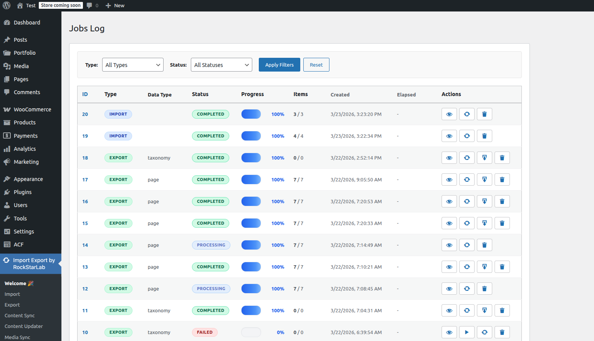
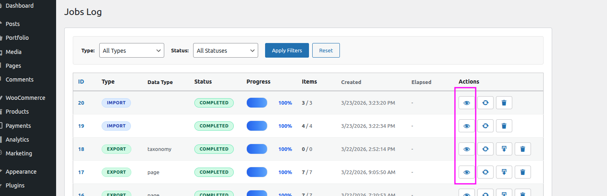
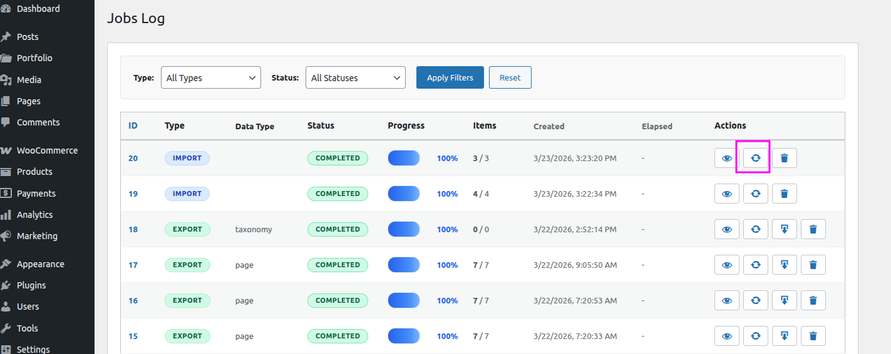
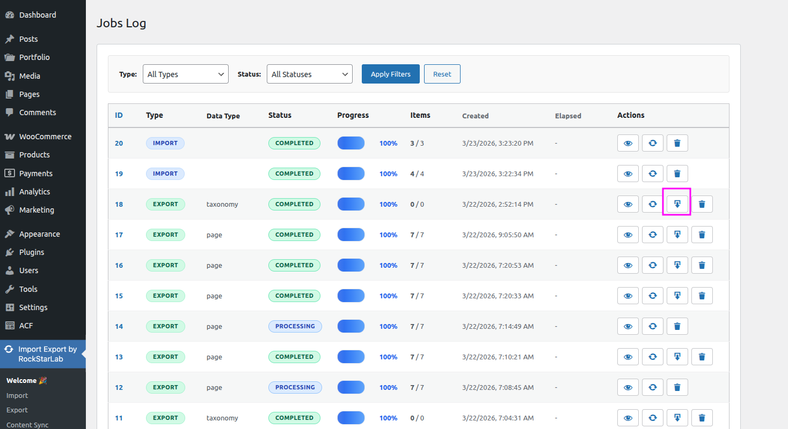

📋 Jobs Log
Every import, export, sync, and update operation is automatically saved as a Job. Re-run any job with a single click or review detailed logs.
What Is a Job?
Whenever you run an import, export, content sync, bulk update, or media sync, the plugin creates a Job — a complete record of that operation including all its parameters, progress, results, and any errors encountered.
Jobs allow you to:
- Review the outcome of any past operation (rows imported, errors, duration)
- Re-run an identical operation with a single click — no reconfiguration needed
- Download the output file of a completed export job
- Cancel a running job
Jobs Log Screen
Navigate to Import Export → Jobs Log to view all jobs.

Column Reference
| Column | Description |
|---|---|
| ID | Unique numeric identifier for the job. |
| Type | Operation type — Import, Export, Sync, Update, or Media Sync. |
| Data Type | The content type being processed (e.g. Posts, Products, Users, Media). |
| Status | Current state of the job — Processing, Completed, Completed with Errors, Failed, or Cancelled. |
| Progress | Real-time progress bar showing how many items have been processed so far. |
| Items | Total number of records processed during the job. |
| Created | Date and time when the job was started. |
| Elapsed | Total processing time from start to finish. |
| Actions | Available actions for the job — View details, Re-run, Cancel, or Delete. |
Job Status Reference
| Status | Meaning |
|---|---|
| 🔄 Processing | The job is currently running. A progress bar shows real-time status. |
| ✅ Completed | The job finished successfully. All rows were processed. |
| ⚠️ Completed with Errors | The job finished but one or more rows encountered errors. Review the error log for details. |
| ❌ Failed | The job encountered a fatal error and could not complete. Check the error log and the server error log. |
| 🚫 Cancelled | The job was manually cancelled by the user. |
Job Details
Click on the View button on any job in the list to open the Job Details screen.

Re-running a Job
To repeat an operation with exactly the same settings, click the Re-run button on any completed or failed job. The plugin creates a new job with identical configuration. This is especially useful for:
- Recurring exports (e.g., weekly product catalogue exports)
- Re-importing a file after fixing data issues
- Re-running a failed job after resolving the underlying error

Downloading an Export File
For completed Export jobs, a Download button appears in the Actions column. Clicking it immediately downloads the export file that was generated by that job — a CSV file containing all the records that matched the export settings (content type, filters, selected fields, and any other options configured at the time the job was run).

Cleaning Up Old Jobs
Jobs and their associated log data are stored in the WordPress database. To keep the database lean, you can delete old jobs from the Jobs Log screen by selecting them and clicking Delete Selected. Deleting a job also removes its associated error logs and (for export jobs) the generated file.